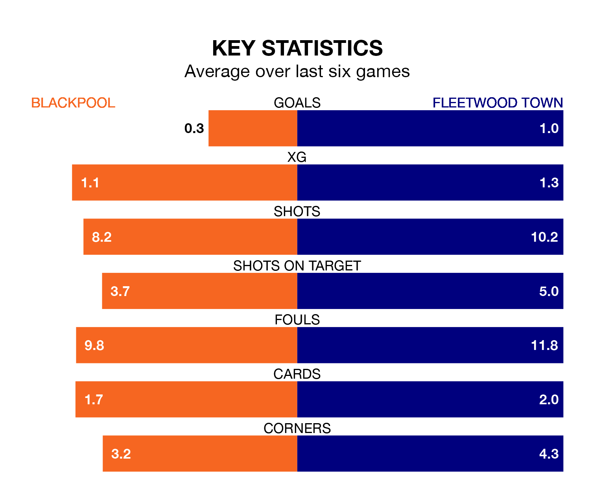

Fleetwood Town travel to Bloomfield Road looking to secure a first win in six EFL League One games against Blackpool on late Tuesday.
The Cod Army have lost two and drawn three matches since they last earned three points – against Wigan Athletic on March 2.
They face a Blackpool side who have won two and drawn one over that time.
Fleetwood are 23rd in the table after 41 games, of which they have won seven and drawn 13, earning 34 points.
Blackpool are 15 places ahead of Town in eighth, with 18 wins and 10 draws putting them on 64 points.
In the last 10 years, Blackpool and Fleetwood have played each other on 12 occasions. Blackpool won five of them, Fleetwood one, and they drew six times.
On average, the Seasiders scored 1.2 goals and the Cod Army 0.8 in those matches.
Their last meeting was on November 1, when they played out a 3-3 draw.
With Daniel Grimshaw between the sticks, the Seasiders can rely on one of the league's safest pair of hands. He has kept 16 clean sheets in his 41 appearances this season, and only two other 'keepers – Portsmouth's Will Norris and Lincoln City's Lukas Jensen – have been able to prevent the opposition scoring on more occasions in EFL League One.
In the Cod Army's net, Jay Lynch has seven clean sheets in 40 games. He has conceded a goal every 58 minutes, 60% more often than the 92 minutes between goals for Grimshaw.
With 42 goals in 41 games so far this season, the visitors are scoring at below the league average rate with 1.0 goals per game. And they are conceding more than average, letting in 67 goals at a rate of 1.6 per game.
The home team, meanwhile, are above average scorers, with 1.4 goals per game, compared to a league average of 1.3. They have conceded 1.0 goal per game.
Blackpool's last match was on Saturday, a 1-0 win against Cambridge United, with Sonny Carey getting the goal for the Seasiders.
Fleetwood lost 4-0 against Oxford United last time out, on April 1.
Updated: 11:20 (UTC), 09/04/24